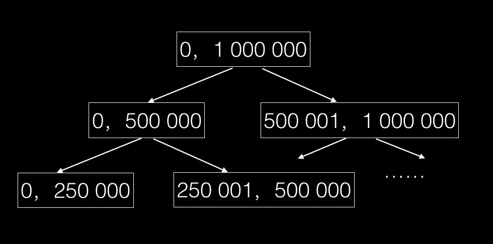
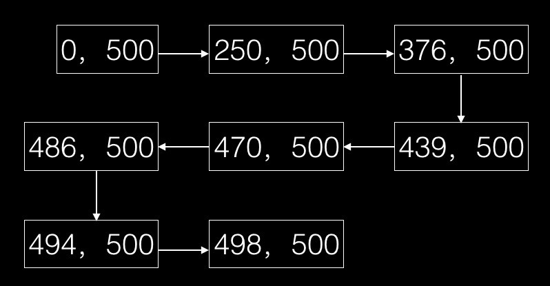
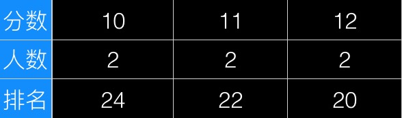
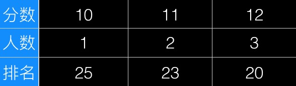

<!DOCTYPE html>
<!-- saved from url=(0062)http://192.168.2.122:8080/md/massive-user-ranking-algorithm.md -->
<html><head><meta http-equiv="Content-Type" content="text/html; charset=UTF-8">

    <title>海量用户积分排名算法 - By Tony Deng</title>
    <link rel="stylesheet" media="all" href="../stylesheets/nodeppt.css">
    <link rel="stylesheet" media="only screen and (max-device-width: 480px)" href="../stylesheets/phone.css">

    <link rel="stylesheet" href="../stylesheets/monokai_sublime.css">
    <link rel="stylesheet" href="../stylesheets/font-awesome.css">

<link rel="stylesheet" href="../stylesheets/theme.colors.css">
<style id="style-1-cropbar-clipper">/* Copyright 2014 Evernote Corporation. All rights reserved. */
.en-markup-crop-options {
    top: 18px !important;
    left: 50% !important;
    margin-left: -100px !important;
    width: 200px !important;
    border: 2px rgba(255,255,255,.38) solid !important;
    border-radius: 4px !important;
}

.en-markup-crop-options div div:first-of-type {
    margin-left: 0px !important;
}
</style></head>
<body style="opacity: 1;">
<div class="slides">
    <slides id="container">
        <slide class="slide current pagedown" data-transition="vertical3d"><section class="slide-wrapper"><article class="flexbox vcenter">
<h1>海量用户积分排名算法</h1>
<p><small>Tony Deng</small></p>
<p><a href="https://tonydeng.github.io/" target="_blank">https://tonydeng.github.io</a></p>
<p><a href="https://twitter.com/wolfdeng" target="_blank">https://twitter.com/wolfdeng</a></p>

</article></section></slide>
<slide class="slide next pagedown" data-transition="earthquake"><section class="slide-wrapper"><article class="flexbox vcenter">
<h1>场景描述</h1>

</article></section></slide>
<slide class="slide far-next pagedown" data-transition="stick"><section class="slide-wrapper"><article>
<p>某海量用户网站，用户拥有积分，积分可能会在使用过程中随时更新。</p>
<p>现在为该网站设计一种算法，在每次用户登录时显示其当前积分排名。</p>
<p>用户最大规模为2亿；积分为非负整数，且小于100万。</p>

</article></section></slide>
<slide class="slide" data-transition="slide2"><section class="slide-wrapper"><article class="flexbox vcenter">
<h1>算法1： 简单SQL查询</h1>

</article></section></slide>
<slide class="slide" data-transition="newspaper"><section class="slide-wrapper"><article class="flexbox vcenter">
<h1>存储结构</h1>
<pre><code class="mysql hljs axapta"><span class="hljs-keyword">desc</span> user_score;
</code></pre>
<pre><code class="mysql hljs gherkin">+---------+------------------+--------+-------+-----------+----------------+
|<span class="hljs-string"> Field   </span>|<span class="hljs-string"> Type             </span>|<span class="hljs-string"> Null   </span>|<span class="hljs-string"> Key   </span>|<span class="hljs-string">   Default </span>|<span class="hljs-string"> Extra          </span>|
|<span class="hljs-string">---------+------------------+--------+-------+-----------+----------------</span>|
|<span class="hljs-string"> uid     </span>|<span class="hljs-string"> int(11) unsigned </span>|<span class="hljs-string"> NO     </span>|<span class="hljs-string"> PRI   </span>|<span class="hljs-string">    &lt;null&gt; </span>|<span class="hljs-string"> auto_increment </span>|
|<span class="hljs-string"> score   </span>|<span class="hljs-string"> int(11)          </span>|<span class="hljs-string"> NO     </span>|<span class="hljs-string"> MUL   </span>|<span class="hljs-string">         0 </span>|<span class="hljs-string">                </span>|
+---------+------------------+--------+-------+-----------+----------------+
</code></pre>

</article></section></slide>
<slide class="slide" data-transition="slide"><section class="slide-wrapper"><article class="flexbox vcenter">
<h1>示例数据</h1>
<pre><code class="mysql hljs"><span class="hljs-operator"><span class="hljs-keyword">select</span> * <span class="hljs-keyword">from</span> user_score;</span>
</code></pre>
<pre><code class="mysql hljs gherkin">+-------+---------+
|<span class="hljs-string">   uid </span>|<span class="hljs-string">   score </span>|
|<span class="hljs-string">-------+---------</span>|
|<span class="hljs-string">     3 </span>|<span class="hljs-string">       0 </span>|
|<span class="hljs-string">     9 </span>|<span class="hljs-string">       8 </span>|
|<span class="hljs-string">     4 </span>|<span class="hljs-string">      99 </span>|
|<span class="hljs-string">     1 </span>|<span class="hljs-string">     232 </span>|
|<span class="hljs-string">    10 </span>|<span class="hljs-string">     555 </span>|
|<span class="hljs-string">     5 </span>|<span class="hljs-string">     878 </span>|
|<span class="hljs-string">     8 </span>|<span class="hljs-string">   69891 </span>|
|<span class="hljs-string">     6 </span>|<span class="hljs-string">  999999 </span>|
|<span class="hljs-string">     2 </span>|<span class="hljs-string"> 1000289 </span>|
+-------+---------+
</code></pre>

</article></section></slide>
<slide class="slide" data-transition="move"><section class="slide-wrapper"><article class="flexbox vcenter">
<h1>简单SQL查询</h1>
<pre><code class="mysql hljs sqf"><span class="hljs-built_in">select</span> t1.<span class="hljs-built_in">score</span>, <span class="hljs-number">1</span>+<span class="hljs-built_in">count</span>(t2.<span class="hljs-built_in">score</span>) as <span class="hljs-built_in">rank</span>
<span class="hljs-keyword">from</span> user_score t1, user_score t2
where t1.uid =<span class="hljs-number">5</span> <span class="hljs-built_in">and</span> t2.<span class="hljs-built_in">score</span>&gt;t1.<span class="hljs-built_in">score</span>;
</code></pre>
<pre><code class="mysql hljs asciidoc"><span class="hljs-code">+---------+</span>--------+
|   score |   rank |
|---------+--------|
<span class="hljs-header">|     878 |      4 |
+---------+--------+</span>
1 row in set
Time: 0.002s
</code></pre>

</article></section></slide>
<slide class="slide" data-transition="horizontal"><section class="slide-wrapper"><article class="flexbox vcenter">
<h1>优点</h1>
<ol>
<li><p>简单，利用SQL的功能，不需要复杂的查询逻辑，也不需要引入额外的存储结构。</p>
</li>
<li><p>对于小规模或性能要求不高的应用来说，不失为一种良好的解决方案</p>
</li>
</ol>

</article></section></slide>
<slide class="slide" data-transition="zoomout"><section class="slide-wrapper"><article class="flexbox vcenter">
<h1>缺点</h1>
<ol>
<li><p><em>user_score</em> 表进行全表扫描。</p>
</li>
<li><p>如有积分更新，会对表造成锁定，在海量数据规模和高并发的场景下，性能是无法接受的。</p>
</li>
</ol>

</article></section></slide>
<slide class="slide" data-transition="slide3"><section class="slide-wrapper"><article class="flexbox vcenter">
<h1>算法2：均匀分区设计</h1>

</article></section></slide>
<slide class="slide" data-transition="pulse"><section class="slide-wrapper"><article class="flexbox vcenter">
<h1>设计原理</h1>
<ul>
<li><p>真实的积分变换其实也是有一定规律的，通常一个用户的积分不会突然暴增暴跌。</p>
</li>
<li><p>一般用户总是要在低分区混迹很长时间才会慢慢升入高分区。也即是说，<em> 用户积分的分布总体来说是有区段的 </em> 。</p>
</li>
<li><p>进一步考虑，<em>高分区用户的细微变化其实对低分区用户的排名影响不大</em>。</p>
</li>
</ul>

</article></section></slide>
<slide class="slide" data-transition="cards"><section class="slide-wrapper"><article class="flexbox vcenter">
<h1>存储结构</h1>
<pre><code class="mysql hljs axapta"><span class="hljs-keyword">desc</span> score_range;
</code></pre>
<pre><code class="mysql hljs gherkin">+------------+---------+--------+-------+-----------+---------+
|<span class="hljs-string"> Field      </span>|<span class="hljs-string"> Type    </span>|<span class="hljs-string"> Null   </span>|<span class="hljs-string"> Key   </span>|<span class="hljs-string">   Default </span>|<span class="hljs-string"> Extra   </span>|
|<span class="hljs-string">------------+---------+--------+-------+-----------+---------</span>|
|<span class="hljs-string"> from_score </span>|<span class="hljs-string"> int(11) </span>|<span class="hljs-string"> NO     </span>|<span class="hljs-string"> PRI   </span>|<span class="hljs-string">         0 </span>|<span class="hljs-string">         </span>|
|<span class="hljs-string"> to_score   </span>|<span class="hljs-string"> int(11) </span>|<span class="hljs-string"> NO     </span>|<span class="hljs-string"> PRI   </span>|<span class="hljs-string">         0 </span>|<span class="hljs-string">         </span>|
|<span class="hljs-string"> count      </span>|<span class="hljs-string"> int(11) </span>|<span class="hljs-string"> YES    </span>|<span class="hljs-string">       </span>|<span class="hljs-string">         0 </span>|<span class="hljs-string">         </span>|
+------------+---------+--------+-------+-----------+---------+
</code></pre>

</article></section></slide>
<slide class="slide" data-transition="vkontext"><section class="slide-wrapper"><article class="flexbox vcenter">
<h1>数据示例</h1>
<pre><code class="mysql hljs"><span class="hljs-operator"><span class="hljs-keyword">select</span> * <span class="hljs-keyword">from</span> score_range;</span>
</code></pre>
<pre><code class="mysql hljs gherkin">+--------------+------------+---------+
|<span class="hljs-string">   from_score </span>|<span class="hljs-string">   to_score </span>|<span class="hljs-string">   count </span>|
|<span class="hljs-string">--------------+------------+---------</span>|
|<span class="hljs-string">            0 </span>|<span class="hljs-string">       1000 </span>|<span class="hljs-string">   48892 </span>|
|<span class="hljs-string">         1000 </span>|<span class="hljs-string">       2000 </span>|<span class="hljs-string">   25329 </span>|
|<span class="hljs-string">         2000 </span>|<span class="hljs-string">       3000 </span>|<span class="hljs-string">   12568 </span>|
|<span class="hljs-string">         3000 </span>|<span class="hljs-string">       4000 </span>|<span class="hljs-string">   10207 </span>|
+--------------+------------+---------+
4 rows in set
Time: 0.002s
</code></pre>

</article></section></slide>
<slide class="slide" data-transition="circle"><section class="slide-wrapper"><article>
<ul>
<li><p>如果我们按每1000分划分一个区间，则有[1,1000],[1000,2000],...,[999 000,1 000 000]这1000个区间。</p>
</li>
<li><p>在分区积分表的辅助下查询积分为<code>2012</code>的用户排名，可以首先确定其所属区间，把高于该用户在本区间内的count值累加，然后再查询出该用户在本区间内的排名，相加即可知道用户的排名。</p>
</li>
</ul>

</article></section></slide>
<slide class="slide" data-transition="earthquake"><section class="slide-wrapper"><article>
<h2>执行SQL</h2>
<pre><code class="mysql hljs"><span class="hljs-operator"><span class="hljs-keyword">select</span> <span class="hljs-keyword">sum</span>(<span class="hljs-keyword">count</span>) <span class="hljs-keyword">as</span> higt_rank
<span class="hljs-keyword">from</span> score_range
<span class="hljs-keyword">where</span> from_score &gt; <span class="hljs-number">2000</span> <span class="hljs-keyword">and</span> to_score&gt; <span class="hljs-number">3000</span>;</span>
</code></pre>
<pre><code class="mysql hljs gherkin">+-------------+
|<span class="hljs-string">   higt_rank </span>|
|<span class="hljs-string">-------------</span>|
|<span class="hljs-string">       10207 </span>|
+-------------+
1 row in set
Time: 0.001s
</code></pre>
<pre><code class="mysql hljs stylus">select t1<span class="hljs-class">.uid</span>, t1<span class="hljs-class">.score</span>, <span class="hljs-number">1</span>+<span class="hljs-function"><span class="hljs-title">count</span><span class="hljs-params">(t2.uid)</span></span> as low_rank
from user_score t1, user_score t2
where t1<span class="hljs-class">.uid</span> = <span class="hljs-number">1</span> and t2<span class="hljs-class">.score</span> &gt; t1. score and t2<span class="hljs-class">.score</span> &lt; <span class="hljs-number">2000</span>
</code></pre>
<pre><code class="mysql hljs gherkin">+-------+---------+------------+
|<span class="hljs-string">   uid </span>|<span class="hljs-string">   score </span>|<span class="hljs-string">   low_rank </span>|
|<span class="hljs-string">-------+---------+------------</span>|
|<span class="hljs-string">     1 </span>|<span class="hljs-string">     232 </span>|<span class="hljs-string">          3 </span>|
+-------+---------+------------+
1 row in set
Time: 0.002s
</code></pre>

</article></section></slide>
<slide class="slide" data-transition="glue"><section class="slide-wrapper"><article>
<h2>explain分析</h2>
<pre><code class="mysql hljs"><span class="hljs-operator"><span class="hljs-keyword">explain</span> <span class="hljs-keyword">select</span> t1.uid, t1.score, <span class="hljs-number">1</span>+<span class="hljs-keyword">count</span>(t2.uid) <span class="hljs-keyword">as</span> low_rank
<span class="hljs-keyword">from</span> user_score t1, user_score t2
<span class="hljs-keyword">where</span> t1.uid = <span class="hljs-number">1</span> <span class="hljs-keyword">and</span> t2.score &gt; t1. score <span class="hljs-keyword">and</span> t2.score &lt; <span class="hljs-number">2000</span>

+<span class="hljs-comment">------+---------------+---------+--------------+--------+-----------------+---------+-----------+--------+--------+------------+--------------------------+</span>
|   <span class="hljs-keyword">id</span> | select_type   | <span class="hljs-keyword">table</span>   |   <span class="hljs-keyword">partitions</span> | <span class="hljs-keyword">type</span>   | possible_keys   | <span class="hljs-keyword">key</span>     |   key_len | <span class="hljs-keyword">ref</span>    |   <span class="hljs-keyword">rows</span> |   filtered | Extra                    |
|<span class="hljs-comment">------+---------------+---------+--------------+--------+-----------------+---------+-----------+--------+--------+------------+--------------------------|</span>
|    <span class="hljs-number">1</span> | SIMPLE        | t1      |       &lt;<span class="hljs-literal">null</span>&gt; | const  | PRIMARY,score   | PRIMARY |         <span class="hljs-number">4</span> | const  |      <span class="hljs-number">1</span> |        <span class="hljs-number">100</span> | &lt;<span class="hljs-literal">null</span>&gt;                   |
|    <span class="hljs-number">1</span> | SIMPLE        | t2      |       &lt;<span class="hljs-literal">null</span>&gt; | <span class="hljs-keyword">range</span>  | score           | score   |         <span class="hljs-number">4</span> | &lt;<span class="hljs-literal">null</span>&gt; |      <span class="hljs-number">2</span> |        <span class="hljs-number">100</span> | <span class="hljs-keyword">Using</span> <span class="hljs-keyword">where</span>;</span> Using index |
+<span class="hljs-comment">------+---------------+---------+--------------+--------+-----------------+---------+-----------+--------+--------+------------+--------------------------+</span>
</code></pre>
<pre><code class="mysql hljs gherkin">explain select t1.uid, t1.score, 1+count(t2.uid) as low_rank
from user_score t1, user_score t2
where t1.uid = 1 and t2.score &gt; t1. score;

+------+---------------+---------+--------------+--------+-----------------+---------+-----------+--------+--------+------------+--------------------------+
|<span class="hljs-string">   id </span>|<span class="hljs-string"> select_type   </span>|<span class="hljs-string"> table   </span>|<span class="hljs-string">   partitions </span>|<span class="hljs-string"> type   </span>|<span class="hljs-string"> possible_keys   </span>|<span class="hljs-string"> key     </span>|<span class="hljs-string">   key_len </span>|<span class="hljs-string"> ref    </span>|<span class="hljs-string">   rows </span>|<span class="hljs-string">   filtered </span>|<span class="hljs-string"> Extra                    </span>|
|<span class="hljs-string">------+---------------+---------+--------------+--------+-----------------+---------+-----------+--------+--------+------------+--------------------------</span>|
|<span class="hljs-string">    1 </span>|<span class="hljs-string"> SIMPLE        </span>|<span class="hljs-string"> t1      </span>|<span class="hljs-string">       &lt;null&gt; </span>|<span class="hljs-string"> const  </span>|<span class="hljs-string"> PRIMARY,score   </span>|<span class="hljs-string"> PRIMARY </span>|<span class="hljs-string">         4 </span>|<span class="hljs-string"> const  </span>|<span class="hljs-string">      1 </span>|<span class="hljs-string">        100 </span>|<span class="hljs-string"> &lt;null&gt;                   </span>|
|<span class="hljs-string">    1 </span>|<span class="hljs-string"> SIMPLE        </span>|<span class="hljs-string"> t2      </span>|<span class="hljs-string">       &lt;null&gt; </span>|<span class="hljs-string"> range  </span>|<span class="hljs-string"> score           </span>|<span class="hljs-string"> score   </span>|<span class="hljs-string">         4 </span>|<span class="hljs-string"> &lt;null&gt; </span>|<span class="hljs-string">      5 </span>|<span class="hljs-string">        100 </span>|<span class="hljs-string"> Using where; Using index </span>|
+------+---------------+---------+--------------+--------+-----------------+---------+-----------+--------+--------+------------+--------------------------+
</code></pre>

</article></section></slide>
<slide class="slide" data-transition="stick"><section class="slide-wrapper"><article>
<ul>
<li><p>从分析结果来说，扫描的条数少了，不过依然是对所有score小于2000的记录都进行了扫描。</p>
</li>
<li><p>二八定律告诉我们，前20%的低分区往往集中了80%的用户。对于大量低分区用户进行排名查询的性能远不及对少数高分区用户进行排名查询。</p>
</li>
<li><p>这种分区方式并没有带来实质的性能提升。</p>
</li>
</ul>

</article></section></slide>
<slide class="slide" data-transition="cards"><section class="slide-wrapper"><article class="flexbox vcenter">
<h1>优点</h1>
<p>注意到了积分区间的存在，并通过预先聚合消除查询的全表扫描。</p>

</article></section></slide>
<slide class="slide" data-transition="slide3"><section class="slide-wrapper"><article class="flexbox vcenter">
<h1>缺点</h1>
<p>积分非均匀分布的特定使得性能提升并不理想。</p>

</article></section></slide>
<slide class="slide" data-transition="circle"><section class="slide-wrapper"><article class="flexbox vcenter">
<h1>还有办法吗❓</h1>

</article></section></slide>
<slide class="slide" data-transition="cards"><section class="slide-wrapper"><article>
<h3>能不能按二八定律，把score_range表设计未非均匀区间呢？</h3>
<blockquote>
<p>比如，低分区密集一些，10分一个区间，然后在逐步变成100分，1000分，10000分.......</p>
</blockquote>

</article></section></slide>
<slide class="slide" data-transition="earthquake"><section class="slide-wrapper"><article class="flexbox vcenter">
<h1>算法3：树形分区设计</h1>

</article></section></slide>
<slide class="slide" data-transition="newspaper"><section class="slide-wrapper"><article>
<ul>
<li><p>把[0,1 000 000]作为一级区间，再把一级区间分为两个二级区间[0, 500 000]，[500 001, 1 000 000]，然后在把二级区间二分为4个三级区间，以此类推，最终我们会得到1 000 000个21级区间。 [0,1],[1,2] ... [999 999,1 000 000]。</p>
</li>
<li><p>其实就把区间组织成一种<em>平衡二叉树</em>结构。</p>
</li>
</ul>

</article></section></slide>
<slide class="slide" data-transition="move"><section class="slide-wrapper"><article>


</article></section></slide>
<slide class="slide" data-transition="pulse"><section class="slide-wrapper"><article>
<h2>如何更新</h2>
<ul>
<li><p>每次用户积分有变化需要更新的区间数量和积分变化量有关系，积分变换越小，更新的区间层次越低。</p>
</li>
<li><p>总体上，每次需要更新的区间是用户积分变量的<em>log n</em>级别的，也就是说，如果用户积分一次变化在百万级，更新区间的数量在二十这个级别。</p>
</li>
</ul>

</article></section></slide>
<slide class="slide" data-transition="zoomout"><section class="slide-wrapper"><article>
<h2>如何查询</h2>
<p>在这种树形分区积分表的辅助下查询积分为<code>s</code>的用户排名，实际上是一个在区间树上由上至下、由粗到细一步步明确<code>s</code>所在位置的过程。</p>

</article></section></slide>
<slide class="slide" data-transition="slide"><section class="slide-wrapper"><article>
<p><em>比如，对于积分 499 000，我们用一个初值为0的排名变量来做累加</em></p>
<ul>
<li>首先，它属于1级区间的左子树[0,500 000]，那么该用户排名应该在右子树[500 000,1 000 000]的用户数count之后，我们把该count值累加到该用户排名变量，进入下一级区间；</li>
<li>其次，它属于3级区间的[250 000, 500 000]，这是2级区间的右子树，所以不用累加count到排名变量，直接进入下一级区间；</li>
<li>再次，它属于4级区间的......</li>
<li>直到最后我们把积分精确定位到21级区间[499 000,499 001]，整个累加过程完成，得出排名。</li>
</ul>

</article></section></slide>
<slide class="slide" data-transition="zoomout"><section class="slide-wrapper"><article>


</article></section></slide>
<slide class="slide" data-transition="pulse"><section class="slide-wrapper"><article class="flexbox vcenter">
<h1>关于性能提升</h1>
<ol>
<li><p>更新和查询虽然都涉及若干个操作，但如果我们为<em>from_score</em>和<em>to_score</em>建立索引，这些操作都是<code>基于键的查询和更新，不会产生表扫描</code>，因此效率更高。</p>
</li>
<li><p>结构并不依赖关系数据模型和SQL运算，可以<code>轻易改造为NoSQL等其他存储</code>，而基于键的操作也<code>很容易引入缓存机制进行优化性能</code>。</p>
</li>
<li><p>整个树形区间的数目大约为 <em>200 000 000</em>，考虑每个节点的大小，整个结构只占用<em>几十M</em>空间，完全可以在内存建立区间树结构，并通过 <em>user_score</em> 表在 <em>O(n)</em> 的时间内初始化区间树，然后排名的查询和更新操作都可以在内存进行。一般来说，<code>同样的算法，从数据库到内存的性能提升常常可以达到100%以上</code>。</p>
</li>
</ol>

</article></section></slide>
<slide class="slide" data-transition="vkontext"><section class="slide-wrapper"><article class="flexbox vcenter">
<h1>优点</h1>
<ol>
<li><p>结构稳定，不受积分分布影响</p>
</li>
<li><p>每次查询或更新的复杂度为积分最大值得O(log n)级别，且与用户规模无关，可以应对海量规模</p>
</li>
<li><p>不依赖SQL，容易改造成NoSQL或内存数据结构</p>
</li>
</ol>

</article></section></slide>
<slide class="slide" data-transition="move"><section class="slide-wrapper"><article class="flexbox vcenter">
<h1>缺点</h1>
<p>算法相对复杂</p>

</article></section></slide>
<slide class="slide" data-transition="stick"><section class="slide-wrapper"><article class="flexbox vcenter">
<h1>算法4： 积分排名数组</h1>

</article></section></slide>
<slide class="slide" data-transition="vkontext"><section class="slide-wrapper"><article>
<p>算法3虽然性能较高，达到积分变化的<code>O(log n)</code>的复杂度，但是实现比较复杂。而且<code>O(log n)</code>的复杂度只在<code>n特别大的时候</code>才显示出它的优势，而实际应用中积分变化情况往往不会太大 ，这时和<code>O(n)</code>的算法相比往往没有明显的优势，甚至更慢。</p>

</article></section></slide>
<slide class="slide" data-transition="move"><section class="slide-wrapper"><article>
<p>考虑到这种情况，仔细观察一下积分变化对排名的具体影响，可以发现某用户的积分从<code>s</code>变为<code>s+n</code>，<code>积分小于s</code>或者<code>大于等于s+n</code>的其他用户排名实际上并不会受到影响，<code>只有积分在[s, s+n]区间内</code>的用户排名会下降1位。</p>

</article></section></slide>
<slide class="slide" data-transition="newspaper"><section class="slide-wrapper"><article>
<p>我们可以用一个大小为<code>100 000 000的数组表示积分和排名的对应关系</code>，其中rank数组可以有<code>user_score</code>表在O(n)的复杂度内计算而来。用户排名的查询和更新基于这个数组来进行。查询积分s对应的排名直接 访问rank[s]即可，复杂度为O(1)；当用户积分从s变为s+n，只需要把<code>rank[s]到rank[s+n-1]这个n元素的值加1</code>即可，复杂度为O(n)。</p>

</article></section></slide>
<slide class="slide" data-transition="stick"><section class="slide-wrapper"><article>
<h2>积分变化前</h2>


</article></section></slide>
<slide class="slide" data-transition="stick"><section class="slide-wrapper"><article>
<h2>积分变换后</h2>


</article></section></slide>
<slide class="slide" data-transition="glue"><section class="slide-wrapper"><article class="flexbox vcenter">
<h1>优点</h1>
<ol>
<li><p>积分排名数组比区间数更简单，易于实现</p>
</li>
<li><p>排名查询复杂度为O(1)</p>
</li>
<li><p>排名更新复杂度为O(n),在积分变换不大的情况下非常高效。</p>
</li>
</ol>

</article></section></slide>
<slide class="slide" data-transition="earthquake"><section class="slide-wrapper"><article class="flexbox vcenter">
<h1>缺点</h1>
<p>当n比较大时，需要更新大量元素，效率不如算法3.</p>

</article></section></slide>
<slide class="slide" data-transition="newspaper"><section class="slide-wrapper"><article class="flexbox vcenter">
<h1>总结</h1>

</article></section></slide>
<slide class="slide" data-transition="circle"><section class="slide-wrapper"><article>
<p>上面介绍的用户积分排名算法。</p>
<ul>
<li><p>算法1简单，易于理解和实现，适用于小规模和低并发场景</p>
</li>
<li><p>算法3引入较复杂的树形分区结构，但是O(log n)的复杂度性能优越，可以应用于海量规模和高并发</p>
</li>
<li><p>算法4采用简单的排名数组，易于实现，在积分变换不大的情况下性能不亚于算法3。</p>
</li>
</ul>

</article></section></slide>
<slide class="slide" data-transition="cards"><section class="slide-wrapper"><article class="flexbox vcenter">
<h1>Q &amp; A</h1>

</article></section></slide>


        <!-- <slide class="slide logoslide dark nobackground">
            <article class="flexbox vcenter">
                <h2 style="color: white;">Powered By nodePPT v1.4.2</h2>
            </article>
        </slide> -->
        <div class="slideTip" id="tip"></div>
    </slides>
</div>
<canvas id="drawBoard" class="draw-board" width="900" height="700" style="display: none;"></canvas>
<div class="progress"><span id="progress" style="width: 2.38095%;"></span></div>
<div id="_buttons">
    <div class="_btn-box" id="_btn-box" style="display:none;">
        <button class="fa fa-arrow-circle-left" id="_btn-prev"></button>
        <button class="fa fa-arrow-circle-right" id="_btn-next"></button>
        <button class="fa fa-paint-brush" id="_btn-brush"></button>
        <button class="fa fa-compress" id="_btn-overview" data-toggle="fa fa-expand"></button>
    </div>
    <button class="fa fa-bars" id="_btn-bar" data-toggle="fa fa-close"></button>
</div>
<script src="../javascripts/mix.0.3.0.min.js"></script>
<script>
var base = location.protocol + '//' + location.host;

MixJS.config({
    baseURL: [ base, 'javascripts'].join('/')+'/'
});

</script>
<script src="../javascripts/broadcast.js"></script>
<script src="../javascripts/nodeppt.js"></script>
<script>
Slide.init({
    containerID: 'container',
    drawBoardID: 'drawBoard',
    slideClass: '.slide',
    buildClass: '.build',
    progressID: 'progress',
    transition: 'cover-diamond',
    width: 1100,
    dir: './',

    //打开下面的注释就开启postMessage方式
    //访问网址127.0.0.1:8080/ppt/demo#client
    control:{
        type: 'postMessage',
        args:{
            isControl:  false
        }
    },

    tipID: 'tip'
});
MixJS.loadJS('highlight/highlight.pack.js',function(){
    hljs.tabReplace = '  ';
    hljs.initHighlightingOnLoad();
});
</script>


<!--placeholder-->


<div class="img-full transparent"></div></body></html>
